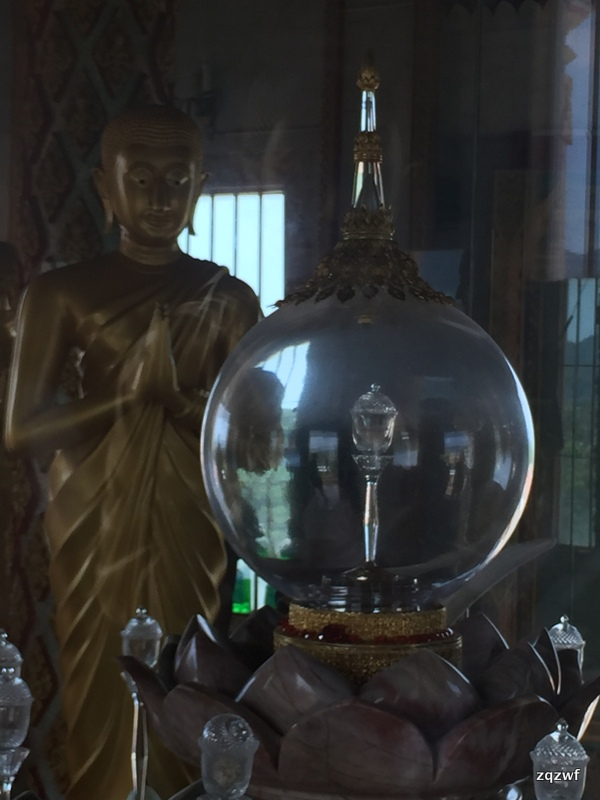
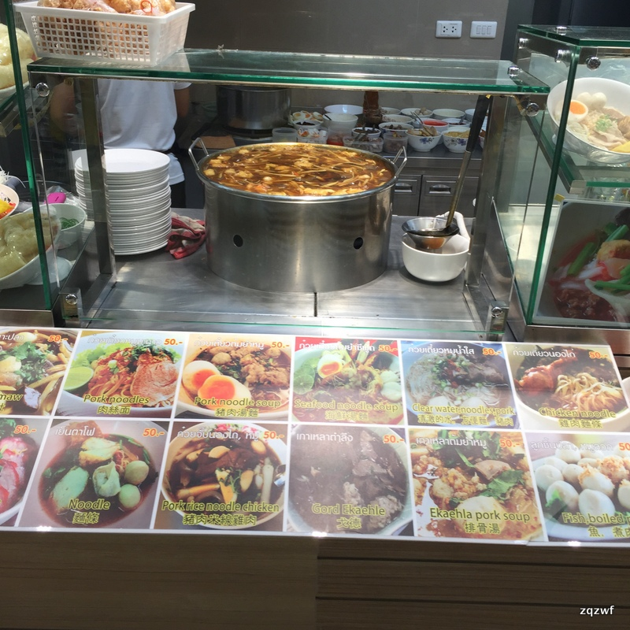
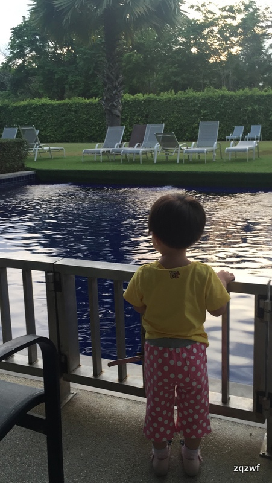

1.住宿
自己从携程定了4月19到4月25的普吉岛行程，入住甜蜜玛利亚艺术酒店（sugar marina ART resort）。我也搞不清resort和hotel的区别。离卡伦海滩只有走路5分钟的距离，出了胡同右转就到。
酒店不错，定的池景房，现在看很明智，出阳台就是泳池，可以从房间直接下泳池，游完直接回房间，太方便了！老婆很满意，宝宝想游随时下去，缺什么回房间就拿，水杯也放阳台上。但是提醒带孩子的，要看好孩子，熊孩子要小心别掉水里，预订房间时也有这个提示，阳台有栏杆，但是大孩子可以翻过去的。泳池边是大大高高的山竹树，结了大果子。
普吉岛有好几个海滩，芭东海滩patong beach和其他。什么卡伦/卡塔之类的。网上有好多攻略，说这里的海滩好，那里的海滩好，我觉得这只是应该考虑的很小的一部分因素。为什么呢，后面会提到。

2.交通
其实选择不大，一个是传说中的双条车，一种就是tutu车/taxi。双条车如果只有几个成人可以试试看，我们由于带了小朋友，实在不方便，而且发车时间基本30分钟一趟，晚上6点后就没有了。在暴晒之下必然熬不到等一个车，剩下就是tuktuk车和taxi，有攻略说价格差很多，但我觉得是一样的，比如从sugar marina酒店到江西冷350TBL，选什么车都是一样的价格，而且taxi是有空调的，舒服的很，但注意的是千万别带榴莲进车子甚至酒店，否则他们的脸青青的态度会很不好。。。还有一次是打车到查龙寺，那种10几个人座的面包车也是400TBL。还有一次是10多个人打面包车（van）到江西冷也是500块。所以这些车的价格都一样，人多就tuktuk（8个以上）人少就taxi。这些车都可以适当讲价，比如500可以讲价到400，400可以到350，没见过更便宜的，他们的定价是有个『标准』牌子的，立在大街上，基本不会有欺诈。
所以总体来说交通费很贵，所以为了节约交通费就要住在你打算常去的地方。比如江西冷Jungceylon / Big c / 班赞Banzaan海鲜市场附近。（这3个其实是一个地方)IMG_7118
- 吃
吃，可能是大家最感兴趣的地方了，顿顿吃海鲜我也吃不起，泰国菜，吃几顿就够够的了，冬荫功汤，咖喱蟹，salad seafood，菠萝饭，芒果饭，最典型的泰国菜。说到饭，泰国的米饭是真心硬邦邦啊，一点都不好吃，难道没有用日本电饭锅来做么？
个人觉得饭馆的价格相差不会太大，比如芒果饭有的120，有的140，最贵150，一盘咖喱蟹，250到300，整个的还是去海鲜市场吧。
我印象比较深的有karon beach的red union，他家的salad seafood要好吃一些，但冬荫功汤太辣。karon sea food的冬荫功汤要好喝一些，但咖喱蟹烂极了。咖喱蟹最好吃的一家是padong的you and me（你和我）本来我是不吃螃蟹的，但吃这里的咖喱蟹后觉得真心好，后来去kalon sea food又点了一次，失望极了。
关于班赞海鲜市场，很多说这个那个的，反正就是能讲价，其实最该关注的是加工费真心贵，论斤算的，下次真可以带个锅去，我们买了4500的海鲜，加工费居然要2000，而且螃蟹和皮皮虾是清蒸！！如果个别用别的做法，超贵，不合适。1楼也有水果，要便宜些，起码比big C便宜。
周末夜市Phuket weekend market传说中的周末夜市，我没去成，因为你妹打车费太贵了，来回1000泰铢，200块RMB，我想不出 去的理由，还好班赞市场外面6点就开始有大排档了，应该和weekend market差不多，毕竟吃的就那么几样，烤鱿鱼，墨鱼，鲅鱼（他们居然说秋刀鱼），烤鸡肉，fruit shake（40泰铢）不过拷墨鱼和鱿鱼然后沾着他们的酸辣酱太好吃了，一般都是50-60，人民币10快左右，便宜啊。IMG_8165 IMG_8164 IMG_8157
另外，如果白天错过了班赞的海鲜也可以在那里吃海鲜，而且不需要加工费，价格我觉得不贵，只问了竹节蛏，500B 1kg，讲讲价估计能到400B，但那个人态度不好，所以没吃。商贩都是抓一把就和你说价钱，你问多少钱一斤他不说。
4.景点
我去了几个景点，基本都是一日游的方式，都是管水和水果，但基本太阳椅子要收费比如150泰铢，2个椅子，虽然理论上是一天，但如果跟当地半日团，导游一会就带你走了。
珊瑚岛：没有珊瑚。。。离普吉岛最近的岛几分钟就到。最有意思的是海滩左侧有很多大礁石，石头里，有很多小动物，比如2cm见方的螃蟹，孩子们很喜欢IMG_7336很多大海参，没人要，而且居然捡到了一个巨大无比的红色海星，腿都有20cm了吧，但导游立马让我们放回去，否则会死翘翘。石头那边可以探到很多宝贝，记得拿着宝宝的挖沙子的桶去哦
珊瑚岛中间导游会带去一个浮潜的地方，水很棒，很清澈，鱼很多
蛋岛：因为宝宝的原因，去了，小鱼在身边来来去去的挺好，但要拿面包喂食才会让它们游回来，刚开始有些兴奋，但过一会就乏味了
蛋岛中间也会去一个浮潜的地方，海浪大一些，没有前一天的地方好。但是老婆下去浮潜，临走时看到了nemo小丑鱼，还是导游发现招呼老婆别上船去看看，等半天在下面珊瑚里才游出来一条小的，漂亮的小丑鱼，还是比较高兴的。浮潜时间太短了，不够尽兴，带孩子不能浮潜为主。
后来又换了一个不知道叫什么名字的岛，也是有好多小鱼，可以岸边浮潜，又收了椅子费。老婆前后浮潜了好几次，但是没有珊瑚，只有浅水区的黄蓝条纹小鱼。深水的礁石没有珊瑚，可能有个别水母，鱼都被喂食吸引走了，可观赏的不多了，不过老婆看到了几条北京太平洋海洋世界里的彩色鱼，红的，蓝色，很开心。很多孩子下水腻歪了，就岸边挖沙子，沙子很细腻很白美美的
注意的是，需要带一个浮潜设备过去，我是当地买的，砍价后250泰铢，大约50块，也不贵，不过比较普通，没有漏水就是了。
骑大象：
小孩子必定喜欢的项目，国内也骑不了。就是消费环节多，先买100泰铢的香蕉，然后给驯象师100-200泰铢，然后中途再买一次100泰铢的香蕉，在大象上，不能不买啊，老婆嚷嚷买。比较颠簸，晒的时候有提供遮阳伞，驯象师是缅甸人，跟老婆攀谈起来，我们骑的大象37岁了母象，比我俩年纪都大，同行年轻的一头是23几岁，个头小，所以载轻的一家子，老板养了50多头大象呢。不过坐完老婆有点心疼大象，心里不是很舒服，估计老板也并不人道对待这些辛苦的动物，它们一直在载客。如果不带孩子，可能就不坐了。最后大象表演，有一头小象一直随音乐摇摆起舞，美美的，老婆喜欢。最后也需要给点消费。。。
查龙寺：
还是去查龙寺吧，我是最后一天去的，从Kalon打车过去400泰铢，与泰国的寺庙比，国内的寺庙太弱了，要门票，不让照相，很多不相关的佛，管你观音如来关公财神甚至乾隆爷都摆一起就怕没游客喜欢的。。。泰国的寺庙太美了，瓦是红色，其他地方金色，可以捐个几十泰铢，然后拿香和花，去拜祭，可以抽个签，里面也可以随便坐，人也不多。有高僧的塑身像，泰国人贴了很多金箔。门口一直燃鞭炮，闹心，孩子怕。据说是唯一一家可以放鞭炮的寺庙，所以华人都跑这边来放了。有一个高塔，最上面一层供奉有舍利，下面全是各种佛像，很多很多，登顶风景很好。泰国寺庙很多猫和狗，都趴着，因为太晒了吧。这里的椰子最便宜，40泰铢，好喝

查龙寺往回走，路过一些本地人小院子，附近转转，拍照了，院子里的树很好看，有车库有车，普遍是日系车。路边花大都三角堇，各种颜色，好看。
700米有个易初莲花超市lotus，算是路上的一个惊喜，超市很大，主要是为当地人服务，不是像big C那样主要为游客，所以价格不贵。水果也比big c 便宜不老少，然后门口有类似我们的美食城的东东，很多当地上班族在这里吃中饭，各种炒饭，细面，烤肉，海鲜色拉，都是50-60一碗，便宜的很。。。服务人员不太会英语，更别说中文，牌子也不会加上中英文，服务员因为不能交流，看我过去都躲着我。我们终于找到一家纯当地的吃饭地方，很高兴，吃了好多

卡伦海滩：
住在卡伦海滩，去过几次，海浪有点，人的确不多，沙子不如海岛的细软，有人放孔明灯，没看上日落，拍照美美的
补图
5.感受
大部分商贩服务人员都是热情的，配合游客照相，但感觉泰国人没那么好，一不小心碰到或者踩到鞋啥的，感觉他们很不开心。
泰国人比较懒，一般都是下午才开始营生，但下午热的 要命，要是报半天的团的话尽量报上半天的吧，下午可以回来休息。
到处都有帮你照相的，虽然不买也可以，但真不爽呢。这个一般贵，300泰铢一个压塑好的照片
6天很快就过去了，再让我 看一下这个泳池吧，孩子很喜欢，一直嚷嚷要游泳

建议：
1.住宿要在你目的地附近最好，因为交通实在不方便。（不差钱没关系）
2.google地图是必要的
3.泰国方便面可以见识一下，味道不错。711遍地是，缺什么随时买
4.带好防晒，烈日太烈了，容易晒伤
5.酒店的东西不要弄丢，检查好仔细，估计之前吃西瓜没留意丢了一个小勺子，赔了50泰铢。。。以前去别的国家旅游，似乎都是直接退房，当然以前也没搞丢搞坏什么哈哈
6.一日游不用着急报，到时看状态，携程，淘宝多的是选择。